LogicLogic values and their coding according to IEEE 1164 STD_ULOGIC type |
Information
This information is part of the Modelica Standard Library maintained by the Modelica Association.
Code Table:
| Logic value | Meaning |
| 'U' | Uninitialized |
| 'X' | Forcing Unknown |
| '0' | Forcing 0 |
| '1' | Forcing 1 |
| 'Z' | High Impedance |
| 'W' | Weak Unknown |
| 'L' | Weak 0 |
| 'H' | Weak 1 |
| '-' | Do not care |
Enumeration Literals (9)
| 'U' |
U Uninitialized |
|---|---|
| 'X' |
X Forcing Unknown |
| '0' |
0 Forcing 0 |
| '1' |
1 Forcing 1 |
| 'Z' |
Z High Impedance |
| 'W' |
W Weak Unknown |
| 'L' |
L Weak 0 |
| 'H' |
H Weak 1 |
| '-' |
- Do not care |
Used in Components (33)
|
Modelica.Electrical.Digital.Examples.Utilities 4 to 1 Bit Multiplexer |
|
|
Modelica.Electrical.Digital.Examples.Utilities Unclocked RS FlipFlop |
|
|
Modelica.Electrical.Digital.Examples.Utilities Unclocked RS FlipFlop |
|
|
Modelica.Electrical.Digital.Examples.Utilities JK FlipFlop |
|
|
Modelica.Electrical.Digital.Examples.Utilities Generic N Bit Counter |
|
| 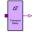 |
Modelica.Electrical.Digital.Delay Transport delay with initial parameter |
| 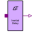 |
Modelica.Electrical.Digital.Delay Inertial delay with initial parameter |
|
Modelica.Electrical.Digital.Delay Provide the input as output if it holds its value for a specific amount of time |
|
| 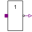 |
Modelica.Electrical.Digital.Basic Not logic component without delay |
| 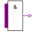 |
Modelica.Electrical.Digital.Basic And logic component with multiple input and one output |
| 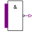 |
Modelica.Electrical.Digital.Basic Nand logic component with multiple input and one output |
| 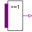 |
Modelica.Electrical.Digital.Basic Or logic component with multiple input and one output |
| 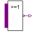 |
Modelica.Electrical.Digital.Basic Nor logic component with multiple input and one output |
| 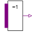 |
Modelica.Electrical.Digital.Basic Xor logic component with multiple input and one output |
| 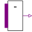 |
Modelica.Electrical.Digital.Basic Xnor logic component with multiple input and one output |
| 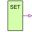 |
Modelica.Electrical.Digital.Sources Digital Set Source |
| 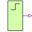 |
Modelica.Electrical.Digital.Sources Digital Step Source |
| 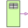 |
Modelica.Electrical.Digital.Sources Digital Tabular Source |
| 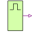 |
Modelica.Electrical.Digital.Sources Digital Pulse Source |
| 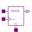 |
Modelica.Electrical.Digital.Registers Edge triggered register bank with reset |
|
Modelica.Electrical.Digital.Registers Edge triggered register bank with set and reset |
|
| 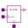 |
Modelica.Electrical.Digital.Registers Level sensitive register bank with reset |
| 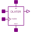 |
Modelica.Electrical.Digital.Registers Level sensitive register bank with set and reset |
|
Modelica.Electrical.Digital.Tristates Transfergate with enable active high |
|
|
Modelica.Electrical.Digital.Tristates Transfergate with enable active high. Output strength reduced. |
|
|
Modelica.Electrical.Digital.Tristates Transfergate with enable active low |
|
|
Modelica.Electrical.Digital.Tristates Transfergate with enable active low. Output strength reduced. |
|
|
Modelica.Electrical.Digital.Tristates Tristate buffer with enable active high |
|
|
Modelica.Electrical.Digital.Tristates Tristate buffer with enable active low |
|
|
Modelica.Electrical.Digital.Tristates Tristate Inverter with enable active high |
|
|
Modelica.Electrical.Digital.Tristates Tristate inverter with enable active low |
|
| 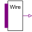 |
Modelica.Electrical.Digital.Tristates Wired node with multiple input and one output |
| 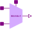 |
Modelica.Electrical.Digital.Multiplexers A two inputs MULTIPLEXER for multiple value logic (2 data inputs, 1 select input, 1 output) |
Extended by (1)
|
Modelica.Electrical.Digital.Interfaces Digital port (both input/output possible) |